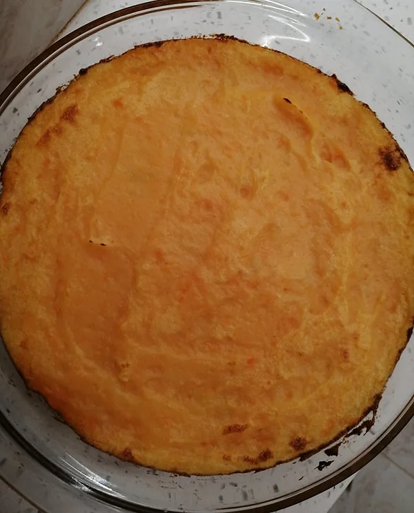
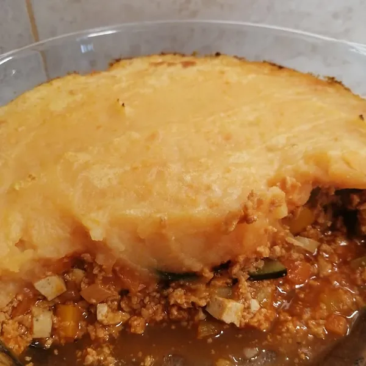

Empadão de Soja
Tempo de preparação
10min
Horas de Cozimento
30min
Tempo Total
40min
Porções
4/5

Ingredientes
Puré:
- 2 batatas brancas
- ½ batata doce
- sal q.b
- 1 ccf manteiga vegetal
- sumo de ½ limão
- leite vegetal (usei de amêndoa) q.b
Recheio:
- soja fina hidratada
- ½ cebola picada
- 1 cenoura cortada aos cubos
- ½ courgette cortada aos cubos
- 3 pimentos pequenos coloridos cortados aos cubos
- 2 salsichas vegan cortadas aos cubos
- azeite q.b
- sal q.b
- pimenta preta q.b
- alho em pó q.b
- pimentão doce q.b
- polpa de tomate q.b
- 1 ccf de massa de pimentão
- 1 csp vinho branco
- 1 folha de loureiro

Instruções
- Coloque a soja fina de molho na noite anterior, para depois ser mais fácil de a confeccionar.
Recheio do empadão:
- Numa panela, refogue a cebola com a cenoura num fio de azeite até ficarem levemente douradas. Acrescente a soja, tempere com uma pitada de sal, pimenta preta, alho em pó, pimentão doce, polpa de tomate, massa de pimentão, vinho branco, um folha de loureiro e refogue por mais 5 minutos.
- Adicione um pouco de água e junte a courgette com os pimentos ao preparado.
- Passados 3 minutos, junte as salsichas e deixe a cozinhar até a courgette estar cozida.
- *
Puré de duas batatas:
- Numa panela com água, coloque as batatas brancas e a batata doce temperadas com sal a cozer, até ficarem moles.
- Escorra a água (deixe só um bocadinho no fundo) e coloque a ccf de manteiga, sumo de meio limão, bebida vegetal e esmague até ficar um puré macio, junte mais bebida vegetal se necessário.
- * Numa travessa, coloque o recheio no fundo, espalhe o puré por cima e leve ao forno pré aquecido a 180°C a gratinar durante 10min ou até ficar dourado. Está pronto a servir com uma salada de alface ou legumes refogados em azeite e alho!